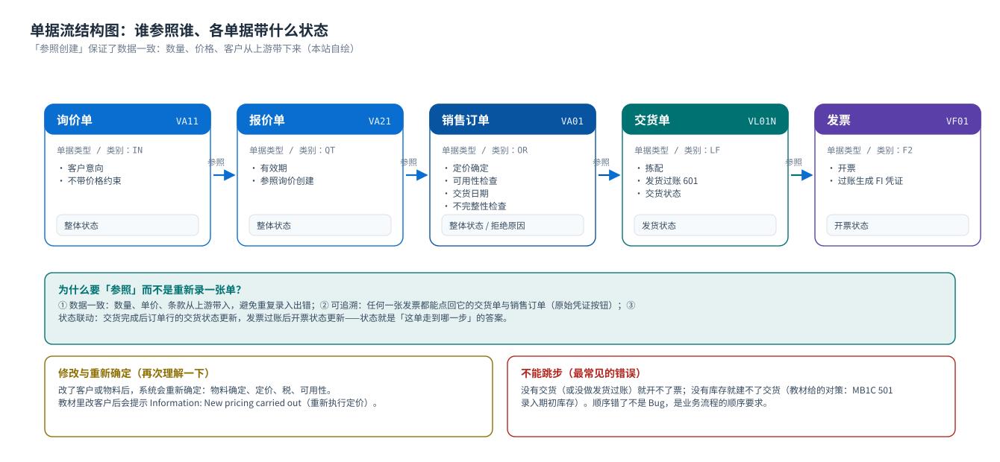
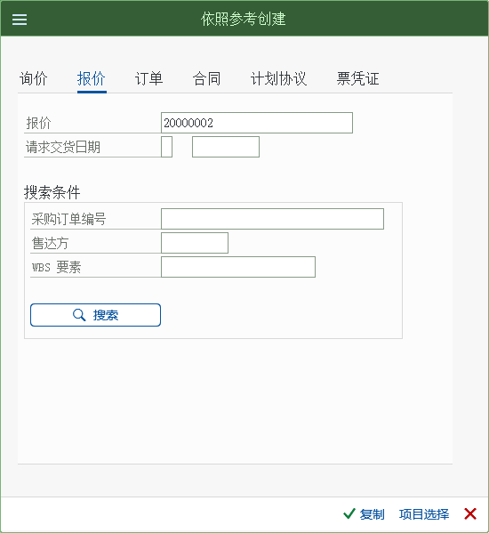
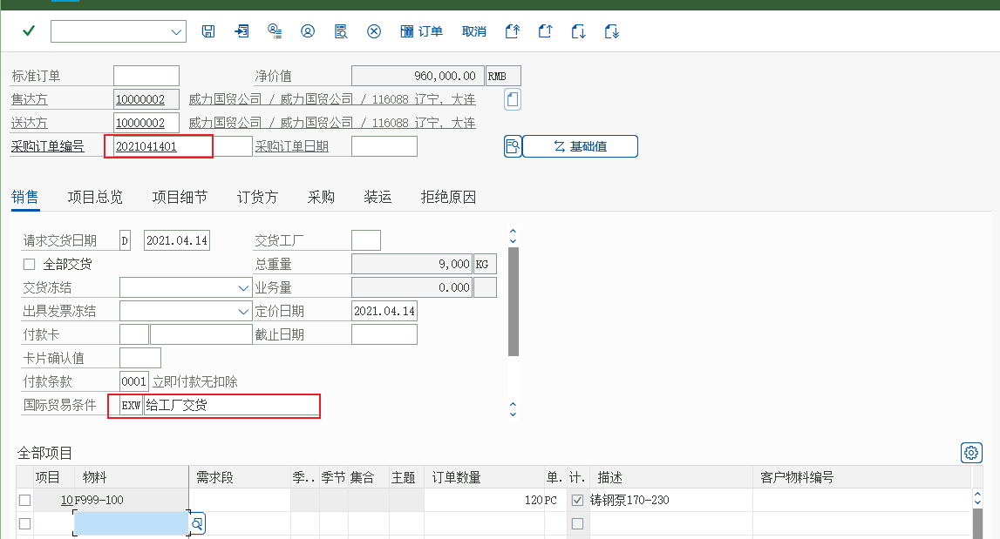

流程 ① 销售订单处理（局部详解）
询价 VA11 · 报价 VA21 · 订单 VA01 · 参照创建 · 可用性检查 · 状态
1. 三个前置单据的位置
销售订单不一定要从询价/报价来，但「参照创建」是标准做法：数据不用重输，且能追到源头。
{kind=link}

| 单据 | T-code | 什么时候用 | 教材场景 |
|---|---|---|---|
询价 VA11 | IN | 客户只是问问，还不确定买 | 教材未逐步演示，本站按标准流程补说明 |
报价 VA21 | QT | 正式给价，可含有效期 | 教材任务 40：给远东造船厂报 30 件铸钢泵 170-230 的价 |
销售订单 VA01 | OR | 客户确认下单 | 教材任务 41：以报价为蓝本创建正式销售订单 |
关于「参照」的三种入口
- 在报价里点「后续功能 → V-01 订单」（教材用的就是这条）；
VA01输入订单类型后，在「参照」区域输入报价号回车；- 从列表（
VA25报价清单）里选中后创建后继单据。
2. 报价：先给客户一个价
教材任务 40「创建报价」的场景：远东造船厂想买 30 件铸钢泵 170-230，销售组织先报价。
教材菜单路径（创建报价）后勤 → 销售和分销 → 销售 → 报价 → VA21-创建

{kind=link}

| 报价画面的关键字段（教材环境实测值） | 内容 |
|---|---|
| 报价单类型 | QT（Quotation） |
| 组织数据 | C999 颐宁销售 / Z1 直销 / Z1 铸钢泵 —— 销售范围决定用哪套定价过程与条件记录 |
| 物料与数量 | F999-100 铸钢泵 170-230 |
| 价格 | 由条件记录 PR00 带出（8,000.00 RMB／PC），不是手输的 |
3. 订单：参照报价创建
客户确认后，从报价走到订单。教材的路径是「后勤 → 销售和分销 → 销售 → 报价 → 后继功能 → V-01-订单」，然后在画面上点「有参照创建」。
教材菜单路径（创建销售订单）后勤 → 销售和分销 → 销售 → 报价 → 后继功能 → V-01-订单

{kind=link}


参照创建带过来什么客户、物料、数量、价格条件、条款等都会带过来，你可以修改。带过来之后再改客户，系统会提示重新执行定价（教材里出现过 Information: New pricing carried out）——因为价格依赖客户（条件记录的键里有客户）。
4. 订单画面逐字段读法（抬头 → 项目 → 状态 → 条件）
| 区域 | 字段 | 含义 / 来源 |
|---|---|---|
| 抬头 | 订单类型 | 决定这张订单怎么走（教材用 OR 标准订单） |
| 抬头 | 销售范围（销售组织 / 分销渠道 / 产品组） | 从客户主数据带出；决定定价过程与条件记录范围 |
| 抬头 | 售达方 / 送达方 / 收票方 / 付款方 | 四个伙伴角色；送达方决定货送哪 |
| 抬头 | 客户参考 / 采购订单号 | 客户的 PO 号，用于对账（现场最常被要求填） |
| 抬头 | 订单日期 / 要求交货日期 | 业务的期望日期（不等于系统确认的日期） |
| 项目 | 物料 + 数量 + 销售单位 | 项目类别由「订单类型 + 物料（项目类别组）」确定 |
| 项目 | 工厂 | 决定从哪个工厂发货（物料主数据 + 装运条件推出） |
| 项目 | 交货日期 / 确认数量 | 可用性检查（ATP）的结果——业务真正该看的日期 |
| 项目 | 条件（价格） | 定价过程的逐行结果：单价、折扣、税、小计（净价值） |
| 状态 | 整体状态 / 交货状态 / 开票状态 | 判断这单走到哪一步 |
先看哪个字段？现场处理问题时的顺序：状态 → 交货日期/确认数量 → 条件（价格）→ 项目类别。价格有问题才去看条件页签；交期有问题去看确认页签。
5. 库存不足怎么办（教材里的真实提示）
{kind=link}

这里有两个知识点
- 可用性检查（ATP）不阻止保存：默认只是给出确认日期；是否阻止保存取决于配置（很多公司会设成「交货时才严格检查」或者对关键客户加块）。
- 补库存要用对移动类型：教材用
MB1C+ 移动类型 501（无采购订单收货）录入期初库存；生产入库一般是 101，采购收货也是 101（对采购订单）。
移动类型决定「这笔库存变动算什么业务」，用错会影响成本与报表。

6. 保存之后看什么
- 拿到订单号（这是后续所有环节的入口）。
- 回到订单抬头：整体状态、项目状态（交货状态/开票状态）。
- 「环境 → 显示单据流」：确认订单已进入单据流（后续会产生交货与发票）。
VA05订单清单：确认它出现在你的清单里（教材任务 46）。- 如果是 MTO 场景：
MD04看需求已经生成（本站 流程页 集成点）。
7. 练习与自检
自检问题
- 为什么订单能自动带出价格和客户地址？（提示：主数据 + 配置）
- 「要求交货日期」和「确认交货日期」哪个是系统算出来的？
- 订单保存时提示无可用库存，业务该怎么做？技术上的对策是什么？
- 订单里改了客户，为什么要重新定价？
- 下一页：交货 —— 真正把货发出去。
- 实训任务：任务 2 报价 → 订单。